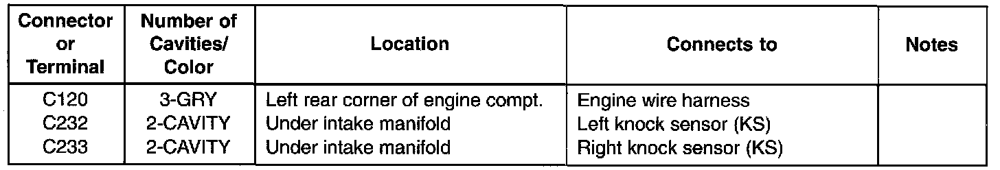
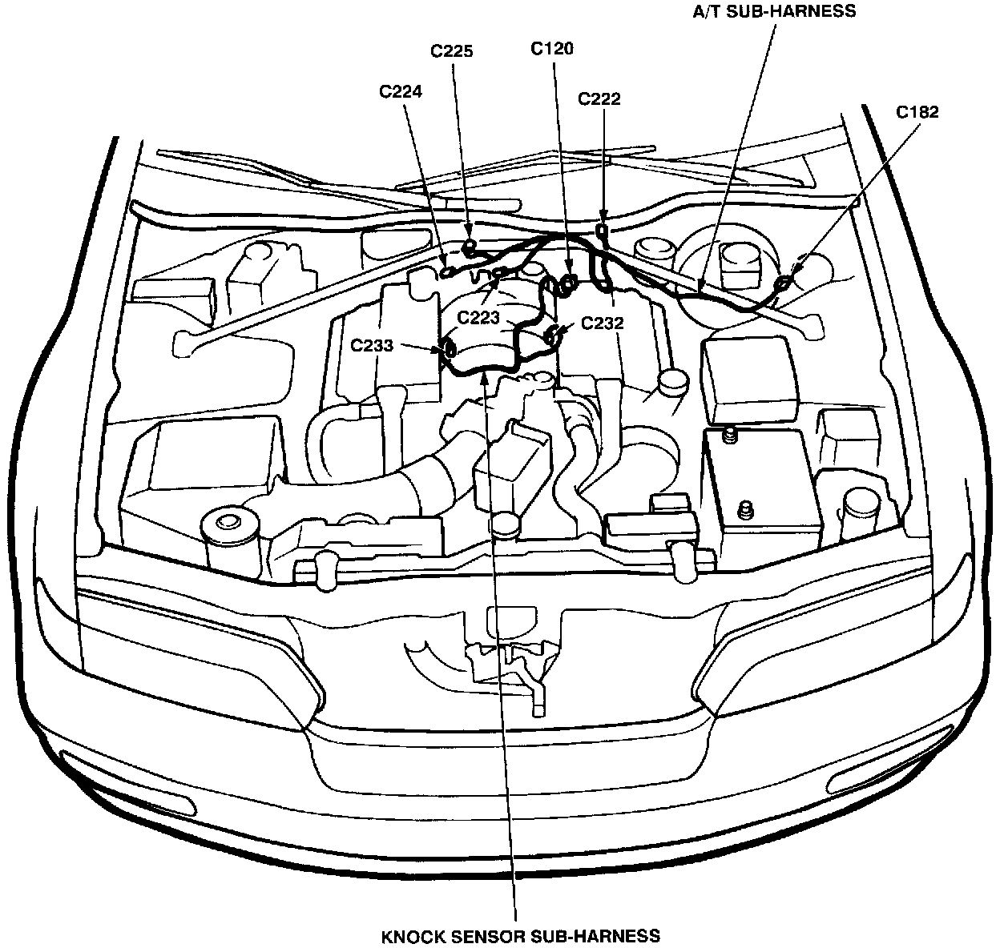

Operation CHARM
: Car repair manuals for everyone.
Home
>>
Acura
>>
1994
>>
Legend Sedan V6-3206cc 3.2L SOHC FI
>>
Repair and Diagnosis
>>
Locations
>>
Harness Locations
>>
Knock Sensor Sub-Harness
Knock Sensor Sub-Harness
Knock Sensor Sub-harness:

A/T Sub-harness & Knock Sensor Sub-harness:
